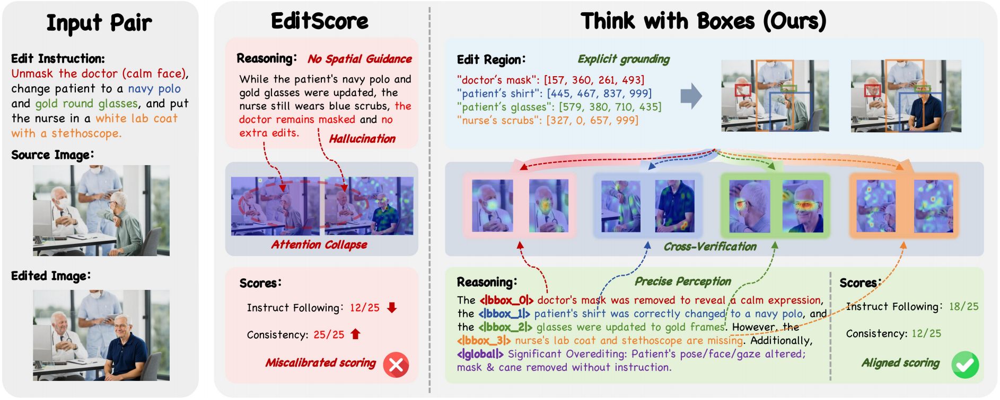
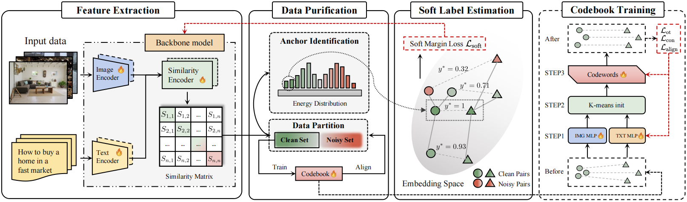
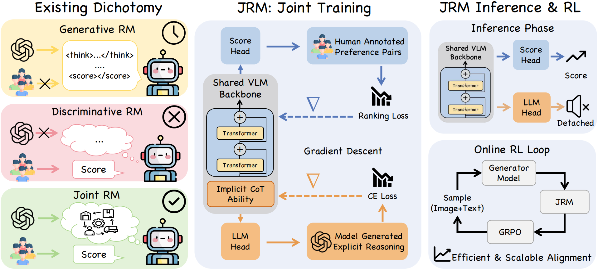
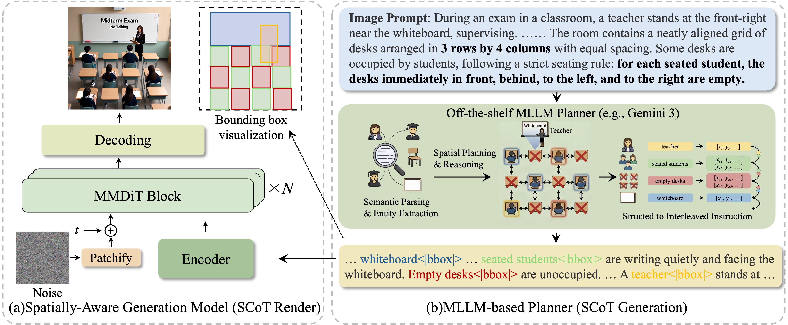
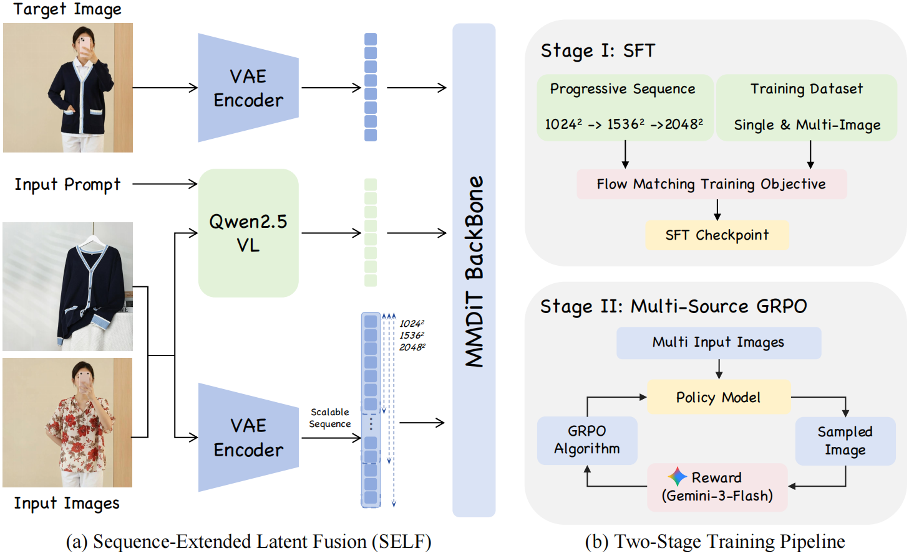
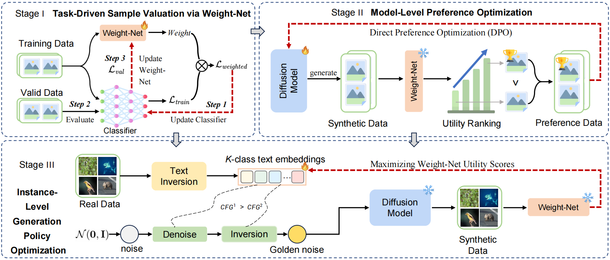

Yancheng Long 龙衍程Incoming MSc StudentDepartment of Computer Science and Engineering The Chinese University of Hong Kong Email: ericlongyancheng@outlook.com
|
|
Biography
I am an incoming MSc student in the Department of Computer Science and Engineering at The Chinese University of Hong Kong (starting Fall 2026). I received my bachelor's degree from Harbin Institute of Technology, Shenzhen in 2026, where I was advised by Prof. Shuo Yang.
Research Interests
My research interests lie in multi-modal content understanding and generation, which include:
- Vision-language alignment in Multi-modal Large Language Models (MLLM)
- Reinforcement Learning from Human Feedback (RLHF) in MLLM
- Unified multi-modal understanding and generation with mutual enhancement
🔍 I am currently seeking full-time positions starting from Fall 2027 related to Multi-modal Large Language Models (MLLM). Please feel free to contact me if you have any opportunities!
News
- [May 2026] One paper (SpatialReward) accepted by ICML 2026! 🎉
- [Dec 2025] One paper (BiCro++) accepted by IEEE TPAMI!
- [Sep 2025] One paper (UtilGen) accepted by NeurIPS 2025!
Publications
* denotes equal contribution

[paper] [code] [project page]

[paper]

[paper]

[paper] [project page]

[paper]

[paper]
Education
- The Chinese University of Hong Kong, MSc in Computer Science, 2026 – 2027 (expected)
- Harbin Institute of Technology, Shenzhen, B.Eng. in Computer Science and Technology, 2022 – 2026
Internship Experience
Kuaishou Keye-VL Team, Beijing, China
Sep. 2025 – Present
Keye-VL Post-train
Sep. 2025 – Present, K-Star Intern
Contributor to the Keye-VL series, including: Keye-VL-671B-A37B, Keye-VL 8B & Keye-VL 1.5 8B
THUNLP Group & ModelBest.Inc, Beijing, China
Apr. 2025 – Sep. 2025
Omni-modal Algorithms Intern
Top Talent Plan - Foundational Models Department
Contributed to the MiniCPM-o 4.5 through end-to-end, low-latency speech generation, Audio-RLHF training, advanced emotional-control audio capabilities, and dataset construction.
| © Yancheng Long | Last updated: May 2026 |